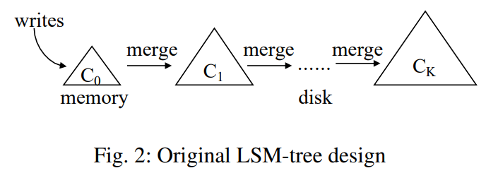

<script src="https://rawcdn.githack.com/oscarmorrison/md-page/232e97938de9f4d79f4110f6cfd637e186b63317/md-page.js"></script>

<noscript>

<a href="../whitepapers.html" style="text-decoration:none;">&#x1F519;</a>&nbsp; &nbsp;</br></br>

Assimilation of LSM-based Storage Techniques: A Survey
==============

Link to the white paper: https://arxiv.org/pdf/1812.07527

## Abstract

- LSM: Log-Structured Merge-Tree (LSM-Tree)

- LSM Tree is a widely adopted for use in storage layer of modern NOSQL systems.

- This paper provides a survey of recent research efforts on LSM-Tree, to understand the state-of-the-art in the LSM-based storage techniques.

- This paper also surveys several representative LSM-based open soure NoSQL systems and discuss some future research direction.

## Introduction

- LSM Tree has been adopted in the storage in many modern NoSQL systems like
    - BigTable
    - Dynamo
    - Hbase
    - Cassandra
    - Level DB
    - Rocks DB
    - Asterix DB

- Different from traditional indexing structures which does an in-place updates, the LSM Tree first buffers all writes in memory and subsequently
    flushes them to disk and merges them using sequential I/O (as opposed to Random I/O which does random access of the disks, which are slow).

- This buffer, flush and sequential merge brings number of advantages like:
    - Superior write performance - Random access to disks (especially magnetic discs with head, as the head needs to be moved randomly which increases latency)

    - High Space Utilization - Here the deleted / older values of updated records are generally purged during the merge which helps prevent the disk fragmentation and helps in space utilization.

    - Tunability - LSM trees offer tunable parameters that allow users to adjust various aspects of the data structure to suit specific workload requirements.
        Parameters such as buffer size, merge thresholds, and compaction strategies can be fine-tuned to optimize performance for different use cases.

    - Simplification of concurrency and recovery - Since the updates are not in-place, we don't need locks on records on disc. Concurrency needs to be managed only for in-memory structures.
        Also, since LSM tree uses sequential I/O and flushes the buffers on disk, it uses immutable data-structures which further simplifies the concurrency control.

- As reported by FB in [Optimizing Space Amplification in RocksDB](https://www.cidrdb.org/cidr2017/papers/p82-dong-cidr17.pdf), Rocks DB, an LSM-Based key value store, alone has been used for following types of workloads:
    - Real-time data processing
    - Graph Processing
    - Stream Processing
    - OLTP Workloads

- This paper attempts to provide a survey of recent efforts to improve the LSM-Tree, starting from a KV store setting with a single LSM Tree, to a more general database settings with secondary index.

- This paper also surveys five representative LSM based open-source NoSQL systems:
    - Level DB
    - Rocks DB
    - HBase
    - Cassandra
    - Astrerix DB

## LSM-Tree Basics

- This section mainly goes over three aspects:

    - History of work on LSM-Trees

    - Basic structure of LSM-Tree as used in today's storage systems.

    - Cost analysis of writes, reads and space utilization of LSM-trees.

### History of LSM-Trees

- Index structure can choose one of two strategies to handle updates:

    - In-place Updates

        - Here, like B<sup>+</sup> tree, the structure directly overwrites the old records to store new updates.

            - These structures are often read optimized, as only the most recent version of each record is stored.

            - However, this design sacrifices write performance as the in-place updates incurs random I/Os first to find the record and then update it.
              [*`NOTE - Typically, in a rotating disc, for a random IO the head needs to come on a place from where the data needs to be read. This is generally slow. It should be
              noted that this might not be a big concern in the state-of-the-art SSD drives as there is no physical head movement in it.`*]

            - Also, this can reduce space utilization as the deletes and updates would cause fragmentation in memory.

    - Out-of-place Updates

        - Like LSM tree, these always stores updates in new location instead of overwriting old entries.

            - This design improves write performance since it can exploit sequential I/O to handle writes.

            - It can also simplify recovery process by not overwriting older data.

            - Though, a major problem with this is that the read performance is sacrificed as the value can be stored in any of the multiple locations.
              [*`NOTE - Typically, in a level based storage the algorithm might have to go multiple level up to find a particular record, as it might not be always stored in the
              leaf page`*]

            - Also, these structures generally requires data re-organization process to improve storage and query efficiency.

- The idea of sequential, out-of-place update is not new and has been applied in database systems since 1970. It has been used in "Differential Files" paper and also in
  "Postgres Project".

    - In the Postgres Project, the idea of <mark>"Log-Structured Database Storage"</mark> was pioneered.

        - In this, all writes were appended into a sequential log, enabling fast recovery (because, we don't over-write the record) and time-travel queries (again since
          we have the previous data available.)

        - It used a background process called "vacuum cleaner" to continuously garbage collect obsolete records from the log.

- There were several key problems the Log-structured storage suffered, prior to LSM-Trees.

    - Storing data into append-only log would lead to low query (read) performance, as related records are scattered across the logs.

    - Also, due to obsolete records not yet been removed, there was a problem of low space utilization.

    - Though various data re-organization processes were designed, <mark>there was no principled cost model to analyze the trade-off between the "write-cost", "the read-cost" and
      "space-utilization".</mark> This caused the early log-structured storage hard to tune.

- The LSM tree, proposed in 1996, addressed these problems by designing a <mark>merge process</mark> which is integrated into the structure itself, <mark>providing high write performance and bounded
  query (read) performance and space-utilization.</mark>

- The original LSM-Tree design had sequence of components C<sub>0</sub>, C<sub>1</sub>, ... , C<sub>K</sub> as shown in the figure below.

    

    - Each component is structured as a B<sup>+</sup> tree.

    - C<sub>0</sub> resides in memory and served incoming writes, while all remaining components C<sub>1</sub>, ... , C<sub>K</sub> resides on disk.

    - When C<sub>i</sub> is full, a rolling merge process is triggered which merges the range of leaf pages from C<sub>i</sub> into C<sub>i+1</sub>. This is called leveling merge policy.
      However, this rolling merge process is not used in today's LSM due to its implementation complexity (we shall see the "why" later).

    - The original paper also showed that under a stable workload, where the number of levels remain static, write performance is optimized when the size ratios T<sub>i</sub> = |C<sub>i+1</sub>|/|C<sub>i</sub>|
      between all adjacent components are the same.
      [*`NOTE - Here the stable workload means that the rate of incoming writes (inserts, updates, deletes) is relatively constant over time. This stability means that the system has reached a steady state where
      the data growth rate is predictable, and the background processes such as merging and compaction of data levels can proceed without significant fluctuations in workload intensity.
      When the workload is stable, the number of levels in the LSM-tree tends to stabilize as well. This is because the frequency and size of merges (compactions) between different levels of the LSM-tree adjust to the
      incoming write rate, allowing the system to maintain a balanced state. In this steady state, the system can more efficiently manage resources, such as memory and disk I/O, leading to optimized performance.`*]

    - In parallel to the LSM-tree, Jagadish et al. proposed a similar structure with the stepped-merge policy to achieve better write performance.
      It organizes the components into levels, and when level L is full with T components, these T components are merged together into a new component at level L+1.
      This policy become the tiering merge policy used in today’s LSM-tree implementations.
      [*`NOTE - Most important thing to understand here is the difference between rolling merge and stepped / tiering merge. In rolling merge, there was only one SSTable at
         each level, and as that level is full we merge it with the L+1 level. The problem in keeping only one SSTable at each level is that there will be frequent merges which requires frequent disk I/O.
         Also, there will be write amplification, which means that one level getting to full size, would trigger multiple merges all the way up to the top level. So the tiering merge policy
         introduced T components at each level,  causes fewer merges and hence fewer disk I/O. This improved write performance.
         It is important to understand that though it improves write performance, since we keep T SSTables unmerged, we need to search all of them which during reads. This affects reads performance to be slow.
         Also, each level contains T component, but the size of each component at a level is T times compared to the size at the previous level. So if write performance is critical, tiered merge policy is better,
         but if read performance is also critical, rolling / leveling merge policy (with one sstable per level) is more suitable.`*]

## Todays LSM-trees
### Basic Structure

- Todays LSM-tree implementations still apply updates out-of-place to reduce random I/Os.

- An insert or update operation simply adds a new entry, while a delete operation adds an anti-matter entry indicating that a key has been deleted.

- Todays LSM tree exploits the immutability of disk components to simplify concurrency control and recovery. Multiple disc components are merged together into a "new" one without modifying the existing components.
  This is different from the rolling merge process proposed in the original LSM-tree.

-


<a href="../whitepapers.html" style="text-decoration:none;">&#x1F519;</a>&nbsp; &nbsp;</br></br>